1920x1050
-- The C compiler identification is GNU 8.2.1 -- The CXX compiler identification is GNU 8.2.1 -- Check for working C compiler: /usr/bin/cc -- Check for working C compiler: /usr/bin/cc -- works -- Detecting C compiler ABI info -- Detecting C compiler ABI info - done -- Detecting C compile features -- Detecting C compile features - done -- Check for working CXX compiler: /usr/bin/c++ -- Check for working CXX compiler: /usr/bin/c++ -- works -- Detecting CXX compiler ABI info -- Detecting CXX compiler ABI info - done -- Detecting CXX compile features -- Detecting CXX compile features - done -- Configuring done -- Generating done -- Build files have been written to: /home/jtarbard/CLionProjects/cw1
Scanning dependencies of target cw1_autogen [ 14%] Automatic MOC and UIC for target cw1 [ 14%] Built target cw1_autogen Scanning dependencies of target cw1 [ 28%] Building CXX object CMakeFiles/cw1.dir/responsive_layout.cpp.o [ 42%] Building CXX object CMakeFiles/cw1.dir/responsive_label.cpp.o [ 57%] Building CXX object CMakeFiles/cw1.dir/responsive_window.cpp.o [ 71%] Building CXX object CMakeFiles/cw1.dir/screenshot.cpp.o [ 85%] Building CXX object CMakeFiles/cw1.dir/cw1_autogen/mocs_compilation.cpp.o [100%] Linking CXX executable cw1 [100%] Built target cw1
Qt version: 5.11.1 Warning: Ignoring XDG_SESSION_TYPE=wayland on Gnome. Use QT_QPA_PLATFORM=wayland to run on Wayland anyway.
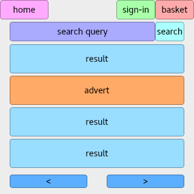
300x300
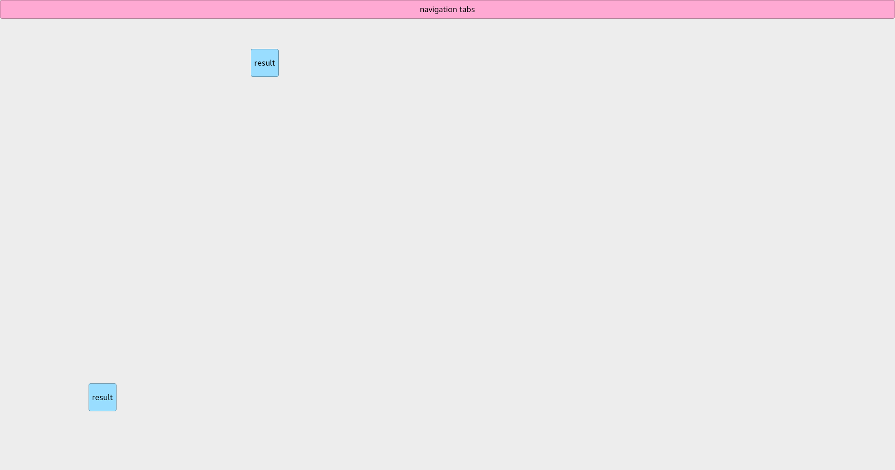
568x320
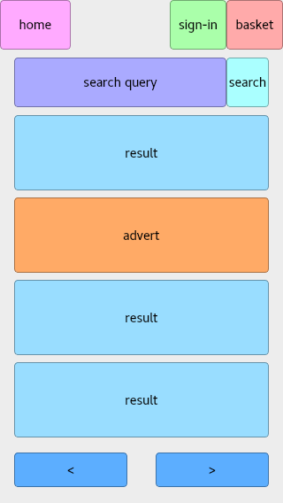
320x568
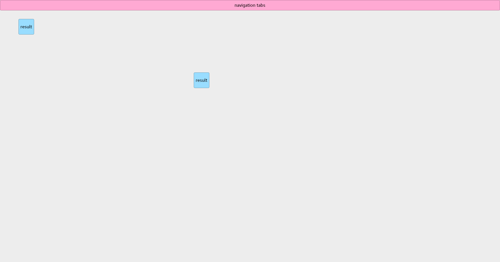
812x375
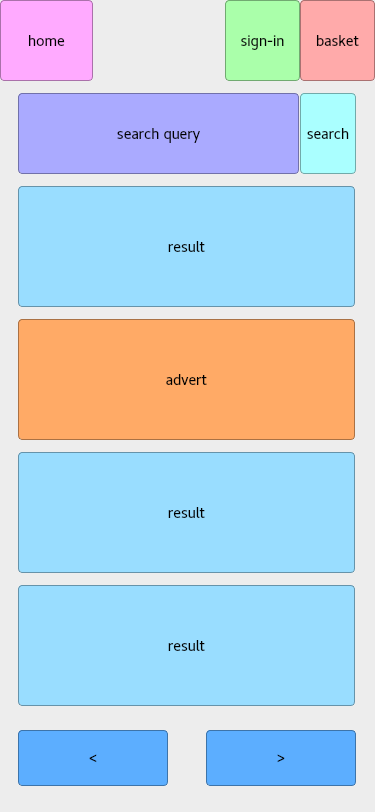
375x812
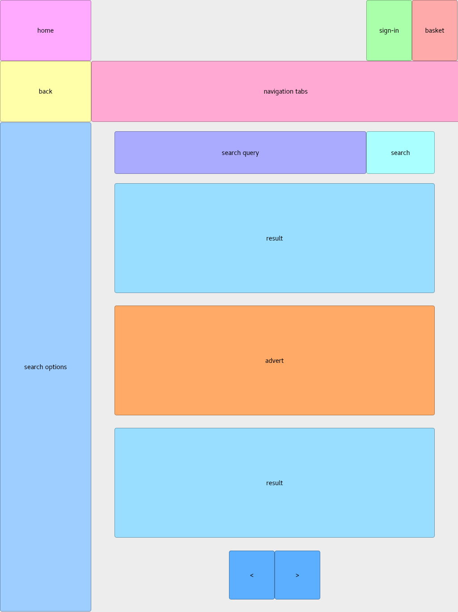
1024x1366
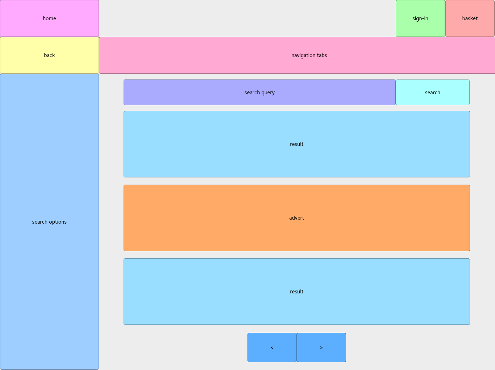
1366x1024
1920x1050
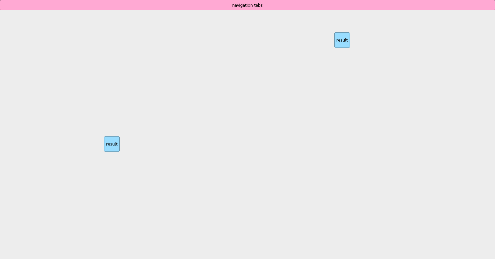
1200x1050
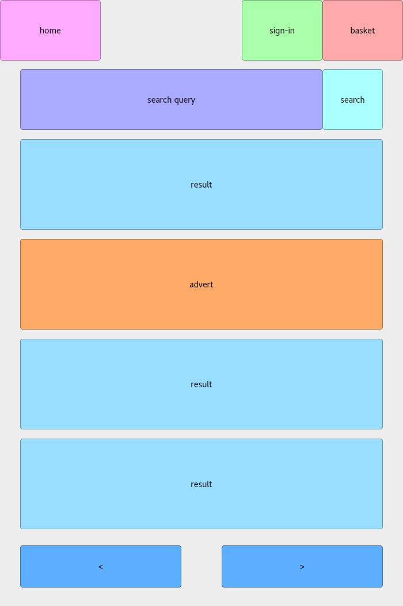
700x1050
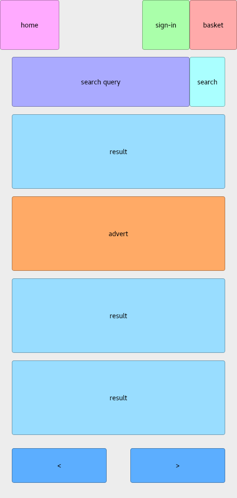
500x1050
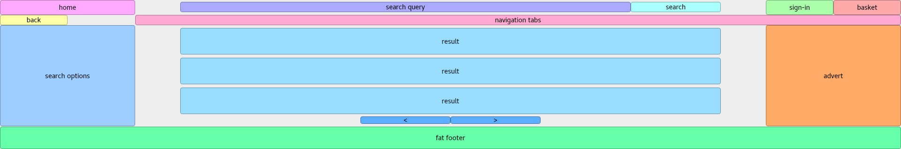
1920x300
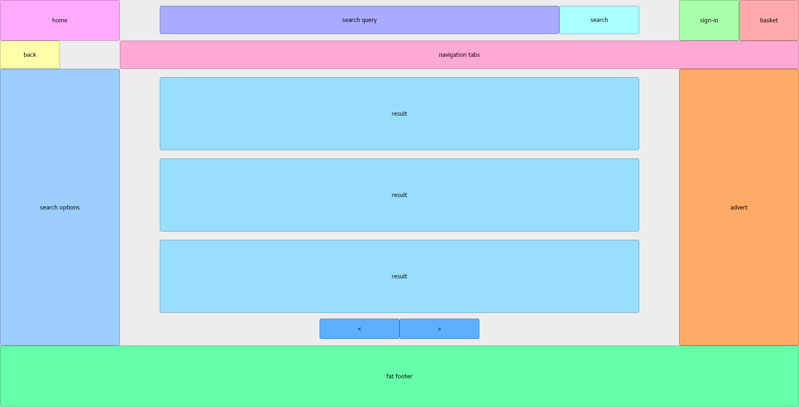
1920x800